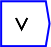
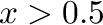
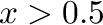

Next: log
Up: Binary Operations
Previous: and
Contents

Logical or of  and
and  , where
, where  means false, and  means true. The output is 1 or 0, depending
on the result being true (1) or false (0) respectively.
means false, and  means true. The output is 1 or 0, depending
on the result being true (1) or false (0) respectively.
The operator can be placed on the canvas in two ways:
- From the Binary Operations (``binop'') toolbar; or
- By typing the letters ``or_'' (the word or, followed by an
underscore) on the canvas and then pressing the Enter key. The underscore
is needed because ``or'' is a reserved word in C++, the programming
language in which Ravel is written.